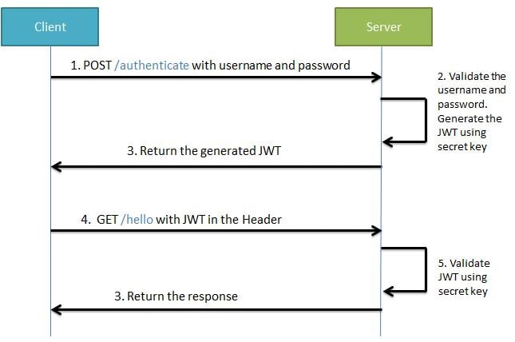
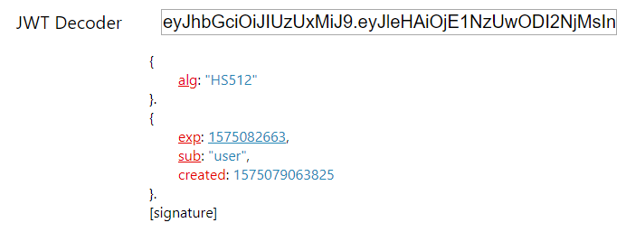

通俗化讲解JWT鉴权的使用场景及结构安全原文出处:本文由博客园博主字母哥博客提供。
原文连接:https://www.cnblogs.com/zimug/p/11968640.html
一、基于Session的应用开发的缺陷
在我们传统的B\S应用开发方式中，都是使用session进行状态管理的，比如说：保存登录、用户、权限等状态信息。这种方式的原理大致如下：
- 用户登陆之后，将状态信息保存到session里面。服务端自动维护sessionid，即将sessionid写入cookie。
- cookie随着HTTP响应，被自动保存到浏览器端。
- 当用户再次发送HTTP请求，sessionid随着cookies被带回服务器端
- 服务器端根据sessionid，可以找回该用户之前保存在session里面的数据。
当然，这整个过程中，cookies和sessionid都是服务端和浏览器端自动维护的。所以从编码层面是感知不到的，程序员只能感知到session数据的存取。但是，这种方式在有些情况下，是不适用的。
- 比如：非浏览器的客户端、手机移动端等等，因为他们没有浏览器自动维护cookies的功能。
- 比如：分布式应用，同一个应用部署甲、乙、丙三个主机上，实现负载均衡应用，其中一个挂掉了其他的还能负载工作。要知道session是保存在服务器内存里面的，三个主机一定是不同的内存。那么你登录的时候访问甲，而获取接口数据的时候访问乙，就无法保证session的唯一性和共享性。
当然以上的这些情况我们都有方案(如redis共享session等)，可以继续使用session来保存状态。但是还有另外一种做法就是不用session了，即开发一个无状态的应用，JWT就是这样的一种方案。
二、JWT是什么？
笔者不想用比较高大上的名词解释JWT（JSON web tokens），你可以认为JWT是一个加密后的接口访问密码，并且该密码里面包含用户名信息。这样既可以知道你是谁？又可以知道你是否可以访问应用？

- 首先，客户端需要向服务端申请JWT令牌，这个过程通常是登录功能。即：由用户名和密码换取JWT令牌。
- 当你访问系统其他的接口时，在HTTP的header中携带JWT令牌。header的名称可以自定义，前后端对应上即可。
- 服务端解签验证JWT中的用户标识，根据用户标识从数据库中加载访问权限、用户信息等状态信息。
这就是JWT，以及JWT在应用服务开发中的使用方法。
三、JWT结构分析
下图是我用在线的JWT解码工具，解码时候的截图。注意我这里用的是解码，不是解密。

从图中，我们可以看到JWT分为三个部分：
- Header，这个部分通常是用来说明JWT使用的算法信息
- payload，这个部分通常用于携带一些自定义的状态附加信息（重要的是用户标识）。但是注意这部分是可以明文解码的，所以注意是用户标识，而不应该是用户名或者其他用户信息。
- signature，这部分是对前两部分数据的签名，防止前两部分数据被篡改。这里需要指定一个密钥secret，进行签名和解签。
四、JWT安全么？
很多的朋友看到上面的这个解码文件，就会生出一个疑问？你都把JWT给解析了，而且JWT又这么的被大家广泛熟知，它还安全么？我用一个简单的道理说明一下：
- JWT就像是一把钥匙，用来开你家里的锁。用户把钥匙一旦丢了，家自然是不安全的。其实和使用session管理状态是一样的，一旦网络或浏览器被劫持了，肯定不安全。
- signature通常被叫做签名，而不是密码。比如：天王盖地虎是签名，宝塔镇河妖就被用来解签。字你全都认识，但是暗号只有知道的人才对得上。当然JWT中的暗号secret不会设计的像诗词一样简单。
- JWT服务端也保存了一把钥匙，就是暗号secret。用来数据的签名和解签，secret一旦丢失，所有用户都是不安全的。所以对于IT人员，更重要的是保护secret的安全。
如何加强JWT的安全性？
- 避免网络劫持，因为使用HTTP的header传递JWT，所以使用HTTPS传输更加安全。这样在网络层面避免了JWT的泄露。
- secret是存放在服务器端的，所以只要应用服务器不被攻破，理论上JWT是安全的。因此要保证服务器的安全。
- 那么有没有JWT加密算法被攻破的可能？当然有。但是对于JWT常用的算法要想攻破，目前已知的方法只能是暴力破解，白话说就是"试密码"。所以要定期更换secret并且保正secret的复杂度，等破解结果出来了，你的secret已经换了。
话说回来，如果你的服务器、或者你团队的内部人员出现漏洞，同样没有一种协议和算法是安全的。
期待您的关注